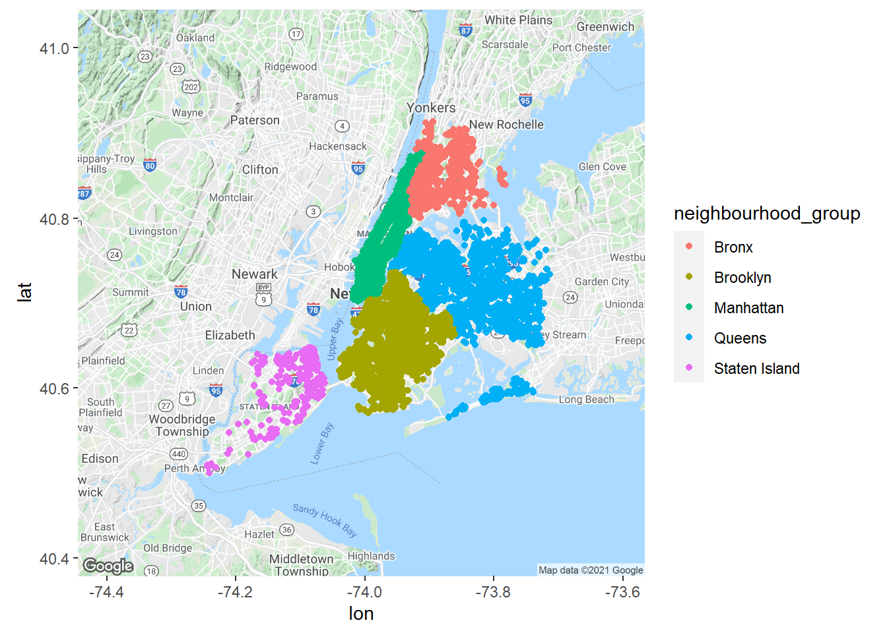

Chapter 3 Análisis Exploratorio de los datos
En este capítulo abordaremos el análisis exploratorio de los dato EDA para el listado de Airbnb de la ciudad de Nueva York en el año 2019.
Resumen de los datos
Empezamos el análisis exploratorio de nuestros datos con las estadísticas de resumen, haciendo uso de la función summary para los datos contenidos en la tabla airbnb de nuestra base de datos en Heroku
con <- dbConnect(RPostgres::Postgres(),
dbname = "d41lsl8qgestjf",
host = "ec2-3-229-43-149.compute-1.amazonaws.com",
port = 5432,
user = "uqtxfaqjjcxggw",
password = "916d311356954de6a99118d13578bb9d1b47bdc86cb8360a60b9606293bd882d")
df = dbGetQuery(con, "SELECT * FROM airbnb")
summary(df)## id host_id neighbourhood_group neighbourhood
## Min. : 2539 Min. : 2438 Length:48895 Length:48895
## 1st Qu.: 9471945 1st Qu.: 7822033 Class :character Class :character
## Median :19677284 Median : 30793816 Mode :character Mode :character
## Mean :19017143 Mean : 67620011
## 3rd Qu.:29152178 3rd Qu.:107434423
## Max. :36487245 Max. :274321313
## latitude longitude room_type price
## Min. :40.50 Min. :-74.24 Length:48895 Min. : 0.0
## 1st Qu.:40.69 1st Qu.:-73.98 Class :character 1st Qu.: 69.0
## Median :40.72 Median :-73.96 Mode :character Median : 106.0
## Mean :40.73 Mean :-73.95 Mean : 152.7
## 3rd Qu.:40.76 3rd Qu.:-73.94 3rd Qu.: 175.0
## Max. :40.91 Max. :-73.71 Max. :10000.0
## minimum_nights number_of_reviews reviews_per_month
## Min. : 1.00 Min. : 0.00 Min. : 0.000
## 1st Qu.: 1.00 1st Qu.: 1.00 1st Qu.: 0.040
## Median : 3.00 Median : 5.00 Median : 0.370
## Mean : 7.03 Mean : 23.27 Mean : 1.091
## 3rd Qu.: 5.00 3rd Qu.: 24.00 3rd Qu.: 1.580
## Max. :1250.00 Max. :629.00 Max. :58.500
## calculated_host_listings_count availability_365
## Min. : 1.000 Min. : 0.0
## 1st Qu.: 1.000 1st Qu.: 0.0
## Median : 1.000 Median : 45.0
## Mean : 7.144 Mean :112.8
## 3rd Qu.: 2.000 3rd Qu.:227.0
## Max. :327.000 Max. :365.0De las columnas de nuestro dataframe, podemos decir por ejemplo que el precio de una noche de los airbnb oscila entre 0 y 10.000 dólares con un promedio de 152.7 dólares, más adelante revisaremos si un precio diario de 10.000 dólares es o no un dato atípico. Adicionalmente, los alojamientos se pueden reservar desde 1 noche sin embargo hay algunos cuyas noches mínimas son de 1.250, alrededor de 3.5 años, esto también es un candidato a dato atípico que será revisado en la siguente sección. Por otro lado, existen anfitriones que tienen hasta 327 alojamientos en la región.
A pesar, que las columnas id, host_id, latitude y longitude son numéricas, no son relevante las métricas de minimo, máximo, media y cuartiles.
Evaluando los valores que pueden tomar las variables categóricas usando la función unique, encontramos que los tipos de alojamiento disponibles son: Habitaciones privadas (“Private room”), Apartamentos Completos (“Entire home/apt”) o Habitaciones compartidas (“Shared room”) y tenemos grupos de vencindarios como Brooklyn, Manhattan, Qeens, Staten Island y Bronx y en total 221 vecindarios disponibles para alojamiento.
unique(df$room_type)## [1] "Private room" "Entire home/apt" "Shared room"unique(df$neighbourhood_group)## [1] "Brooklyn" "Manhattan" "Queens" "Staten Island"
## [5] "Bronx"length(unique(df$neighbourhood))## [1] 221Datos Atípicos
Tenemos sospechas que existen datos atípicos en las columnas price y `minimum_nights. Al analizar los histogramas y boxplots encontramos que estos abarcan la mayor parte del rango de las variables.
par(mfrow = c(1, 2))
ggplot(df) +
aes(x = price) +
geom_histogram(fill = "blue") +
theme_minimal()## `stat_bin()` using `bins = 30`. Pick better value with `binwidth`.ggplot(df) +
aes(x = minimum_nights) +
geom_histogram(fill = "red") +
theme_minimal()## `stat_bin()` using `bins = 30`. Pick better value with `binwidth`.ggplot(df) +
aes(x = "", y = price) +
geom_boxplot(fill = "blue") +
theme_minimal()ggplot(df) +
aes(x = "", y = minimum_nights) +
geom_boxplot(fill = "red") +
theme_minimal()Según la función boxplot.stats()$out que se basa en el criterio IQR, los valores atípicos para el precio son aquellos mayores que 335 mientras que para el mínimo de noches el umbral está en 12.
min(boxplot.stats(df$price)$out)## [1] 335min(boxplot.stats(df$minimum_nights)$out)## [1] 12Si revisamos por el criterio de los percentiles, teniendo en cuenta que las observaciones por fuera del intervalo formado por los percentiles 2.5 y 97.5 se consideran posibles valores atípicos, encontramos que para el precio son potenciales datos atípicos aquellos por debajo de 30 y por encima de 799 y en el caso de las noches mínimas, aquellas obervaciones por debajo de 1 y por encima de 30.
c(quantile(df$price, 0.025), quantile(df$price, 0.975))## 2.5% 97.5%
## 35 500c(quantile(df$minimum_nights, 0.025), quantile(df$minimum_nights, 0.975))## 2.5% 97.5%
## 1 30Otro método, es el filtro de Hampel que determina que es un dato atípico si el precio está por encima de 244 y las noches minimas superan las 9.
c(median(df$price) - 3 * mad(df$price, constant = 1), median(df$price) + 3 * mad(df$price, constant = 1))## [1] -32 244c(median(df$minimum_nights) - 3 * mad(df$minimum_nights, constant = 1), median(df$minimum_nights) + 3 * mad(df$minimum_nights, constant = 1))## [1] -3 9Siendo conservadores, eliminaremos la menor cantidad de datos atípicos posibles, que se consiguen al usar el umbral dado por el criterio de los percentiles. Siendo así, estamos eliminando el 2.13% de nuestros datos, resultando un dataframe con 1.044 registros menos.
nrow(df)## [1] 48895nrow(df[df$price>335, ])/nrow(df)*100.00## [1] 6.06197nrow(df[df$price>500, ])/nrow(df)*100.00## [1] 2.135188nrow(df[df$price>244, ])/nrow(df)*100.00## [1] 13.26311Una vez eliminados estos datos atípicos, volveos a extraer las estadísticas de resumen
df_out = df[df$price<500, ]
summary(df_out)## id host_id neighbourhood_group neighbourhood
## Min. : 2539 Min. : 2438 Length:47660 Length:47660
## 1st Qu.: 9463850 1st Qu.: 7778878 Class :character Class :character
## Median :19623162 Median : 30567770 Mode :character Mode :character
## Mean :18979918 Mean : 67134263
## 3rd Qu.:29058184 3rd Qu.:107216950
## Max. :36487245 Max. :274321313
## latitude longitude room_type price
## Min. :40.50 Min. :-74.24 Length:47660 Min. : 0.0
## 1st Qu.:40.69 1st Qu.:-73.98 Class :character 1st Qu.: 68.0
## Median :40.72 Median :-73.96 Mode :character Median :100.0
## Mean :40.73 Mean :-73.95 Mean :130.1
## 3rd Qu.:40.76 3rd Qu.:-73.94 3rd Qu.:170.0
## Max. :40.91 Max. :-73.71 Max. :499.0
## minimum_nights number_of_reviews reviews_per_month
## Min. : 1.000 Min. : 0.00 Min. : 0.000
## 1st Qu.: 1.000 1st Qu.: 1.00 1st Qu.: 0.040
## Median : 2.000 Median : 5.00 Median : 0.380
## Mean : 6.978 Mean : 23.59 Mean : 1.102
## 3rd Qu.: 5.000 3rd Qu.: 24.00 3rd Qu.: 1.610
## Max. :1250.000 Max. :629.00 Max. :58.500
## calculated_host_listings_count availability_365
## Min. : 1.000 Min. : 0
## 1st Qu.: 1.000 1st Qu.: 0
## Median : 1.000 Median : 42
## Mean : 7.096 Mean :111
## 3rd Qu.: 2.000 3rd Qu.:221
## Max. :327.000 Max. :365par(mfrow = c(1, 2))
ggplot(df_out) +
aes(x = price) +
geom_histogram(fill = "pink") +
theme_minimal()## `stat_bin()` using `bins = 30`. Pick better value with `binwidth`.ggplot(df_out) +
aes(x = "", y = price) +
geom_boxplot(fill = "pink") +
theme_minimal()Análisis del anfitrion
A través de la función de agrupación group_by, podemos obtener los anfitriones con más alojamientos disponibles, encontrando que el mayor tiene 272 lo que no es consistente con el máximo valor encontrado en la columna calculated_host_listings_count debido a la eliminación de datos atípicos realizados anteriormente, es por esto, que esta columna, se eliminará del dataframe.
df_out %>%
group_by(host_id) %>%
summarise(n = n()) %>%
arrange(desc(n)) %>%
head(5) -> top_hostid## `summarise()` ungrouping output (override with `.groups` argument)ggplot(data= top_hostid, aes(x = factor(host_id), y=n)) +
geom_bar(stat="identity", fill = "blue") +
xlab("Host_Id") + ylab("Cant. alojamientos") +
ggtitle("Top 5 de los anfitriones con más alojamientos")borrar = c("calculated_host_listings_count")
df_out = df_out[, !(names(df_out) %in% borrar)]Ahora, revisemos la distribución de alojamientos por grupos de vecindarios.
df_host = filter(df_out, host_id %in% top_hostid$host_id)
df_host%>%
group_by(host_id, neighbourhood_group) %>%
summarise(n = n()) %>%
ggplot(aes(x=factor(host_id), y=n, fill=factor(neighbourhood_group))) +
geom_bar(stat="identity", position="dodge")+
xlab("Host_id") + ylab("Cant. Alojamientos") +
ggtitle("Top 5 de anfitriones con más alojamientos distribuidos por grupo vecindario")+
theme()## `summarise()` regrouping output by 'host_id' (override with `.groups` argument)A pesar, que los grupos de vecindarios disponibles coresponden a Brooklyn, Manhattan, Qeens, Staten Island y Bronx, vemos que los anfitriones con más alojamientos no tienen disponibilidad en Staten Island y Bronx y exceptuando el host 137358866, la mayoría de estos alojamientos se encuentran en Manhattan y solo dos de estos cinco tienenalojamientos en Brooklyn.
Si revisamos la distribución de los precios de estos cinco anfitriones, atraves, de un boxplot, tenemos que el anfitrion 107434423 tiene el mayor precio promedio y el anfitrion 137358866 tiene todos sus alojamnientos en precios similares y más bajos en comparación con los otros.
df_host%>%
ggplot(aes(x=factor(host_id), y=price)) +
geom_boxplot(fill = "pink")+
xlab("Host_Id") + ylab("Precio") +
ggtitle("Distribución de precios para los 5 anfitriones con más alojamientos")
theme()## Named list()
## - attr(*, "class")= chr [1:2] "theme" "gg"
## - attr(*, "complete")= logi FALSE
## - attr(*, "validate")= logi TRUEAnálisis de los precios
Si ahora revisamos los precios, vemos que el mayor precio promedio por noche está en la zona de Manhattan para los tres tipos de alojamiento, adicionalmente y como era de esperarse, es más costoso un alojamiento completo, seguido de una habitación privada y por útimo una habitación compartida, aunque no hay una gran diferencia entre los valores promedios de las habitaciones. Este patrón se mantiene igual, independiente del grupo de vecindario al que pertenezca.
df_out %>%
group_by(neighbourhood_group, room_type)%>%
summarise(m = mean(price)) -> group_type## `summarise()` regrouping output by 'neighbourhood_group' (override with `.groups` argument)group_type%>%
ggplot(aes(x=room_type, y=m, fill=room_type)) +
geom_bar(stat="identity")+
facet_wrap(~neighbourhood_group)+
xlab("Grupo Vecindario") + ylab("Precio Medio") +
ggtitle("Precio promedio por grupo de vecindario y tipo de alojamiento")+
theme(axis.text.x=element_blank())El grupo de vecindario con el precio promedio más alto es Manhattan y en este grupo se manejan el mayor rango de precios. Los precios para Queen y Staten Island tienen distribuciones similares.
ggplot(data=df_out, mapping = aes(x=neighbourhood_group, y=price)) +
geom_violin()+
geom_boxplot(width=0.2)Si agrupamos por tipo de alojamiento, vemos que los valores por habitaión compartida en Staten Island presentan una distribución distintas a las demás con un rango mayor y un sesgo hacia la izquierda. En cuanto a las habitaciones privadas tenemos una alta concentración de valores atípicos. En los alojamientos completos por grupo el precio es consistente, sin muchos valores atípicos.
ggplot(data=df_out, mapping = aes(x=neighbourhood_group, y=price)) +
geom_violin()+
geom_boxplot(width=0.2)+
facet_wrap(~room_type)Visualziación en mapas
Para los datos de interés, contamos con la ubicación (latitud, longitud) de los alojamientos en Nueva York. Revisaremos la distribución de estos en un mapa, através de la función gg_map, ubicándonos precisamente en Nueva York, encontrando que la menor cantidad de alojamientos se encuentra en “Staten Island”
myLocation <- "Nueva York"
myMap <- get_map(location = myLocation, zoom = 10)## Source : https://maps.googleapis.com/maps/api/staticmap?center=Nueva%20York&zoom=10&size=640x640&scale=2&maptype=terrain&language=en-EN&key=xxx## Source : https://maps.googleapis.com/maps/api/geocode/json?address=Nueva+York&key=xxxggmap(myMap) + geom_point(data=df_out, aes(x = longitude, y = latitude, colour= neighbourhood_group))
En Bronx, hay pocos precios altos en los alojamientos y los que existen se encuebntran a los alrededores de la localidad. Si nos enfocamos en Manhattan, vemos que hay una clara división en los precios, los menores se encuentran al norte y los mayores al sur.
En general hay pocos alojamientos con precios altos en comparación con los de precios bajos.
ggmap(myMap) +
geom_point(data=df_out, aes(x = longitude, y = latitude, colour= price))+
scale_color_gradientn(colours = rainbow(5))+
facet_wrap(~neighbourhood_group)